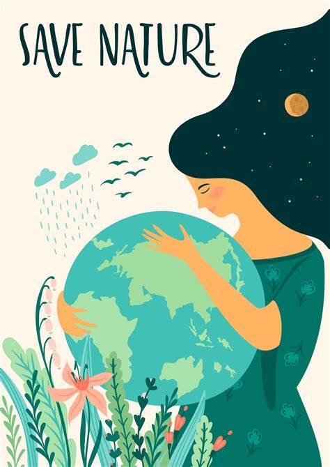

Contact Numbers for Water Pollution and Water Conservation in India
- Central Pollution Control Board (CPCB) - +91-11-43102106/107/108
- State Pollution Control Boards (SPCBs) - You can find the contact details for your state's SPCB on the CPCB website: http://cpcb.nic.in/state-pollution-control-boards-sp-cbs/
- Ministry of Environment, Forest and Climate Change - +91-11-24695142, +91-11-24695487
- National Water Mission - +91-11-24695232
- Central Ground Water Board - +91-11-26102947
